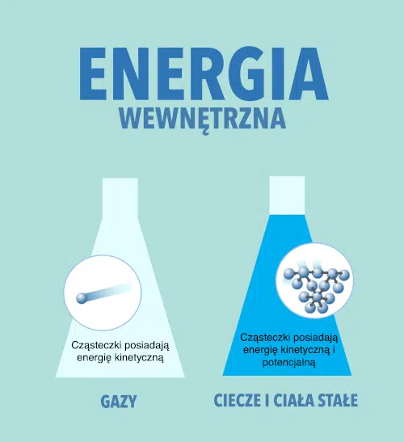

Energia wewnętrzna i temperatura
Aby lepiej zrozumieć badane wielkości, pochylmy się najpierw nad energią wewnętrzną. Jest ona jednym z kluczowych pojęć w termodynamice. Jest to suma całkowitej energii zawartej w systemie, która obejmuje zarówno energię kinetyczną cząsteczek (związaną z ich ruchem), jak i energię potencjalną wynikającą z oddziaływań między cząsteczkami.
Jednostką energii wewnętrznej jest dżul (J).
Energia potencjalna wynika z oddziaływań między cząsteczkami. W ciałach stałych, gdzie cząsteczki są blisko siebie, energia potencjalna może być znacząca ze względu na silne oddziaływania międzycząsteczkowe. W gazach, gdzie cząsteczki są daleko od siebie, energia potencjalna jest zazwyczaj mniejsza.
Energia kinetyczna jest związana z ruchem cząsteczek. W gazach, płynach i ciałach stałych cząsteczki są w ciągłym ruchu, a średnia energia kinetyczna cząsteczek w substancji to temperatura. Wyższa temperatura oznacza, że średnia energia kinetyczna cząsteczek jest większa.
Ciepło
Ciepło, w kontekście termodynamiki, jest formą energii przenoszonej między systemami lub ich częściami w wyniku różnicy temperatur. Ciepło jest transferem energii termicznej z jednego obiektu do drugiego lub z jednej części systemu do innej, zawsze w wyniku różnicy temperatur. Należy pamiętać, że ciepło jest procesem przepływu energii, a nie stanem (jak energia wewnętrzna czy temperatura).
Zgodnie z drugim prawem termodynamiki, ciepło naturalnie przepływa od obiektu o wyższej temperaturze do obiektu o niższej temperaturze, dopóki nie zostanie osiągnięta równowaga termiczna.
Ciepło jest mierzone w tych samych jednostkach co inne formy energii, najczęściej w dżulach (J) w systemie metrycznym lub w kaloriach (cal) w starszych systemach miar.
Ciepło może być przenoszone na trzy główne sposoby: przez przewodzenie (bezpośredni transfer energii między substancjami będącymi w kontakcie), przez konwekcję (przenoszenie ciepła przez ruch masy, np. w cieczach i gazach) i przez promieniowanie (transfer energii za pomocą fal elektromagnetycznych, np. światło słoneczne).
Ciepło właściwe
Ciepło właściwe to miara zdolności substancji do magazynowania ciepła. Jest to ilość ciepła potrzebna do podniesienia temperatury jednostki masy danej substancji o jeden stopień (na przykład o 1 stopień Celsjusza lub 1 kelwin).
Ciepło właściwe jest zazwyczaj wyrażane w jednostkach takich jak joule na kilogram na kelwin (J/kg·K) lub kalorie na gram na stopień Celsjusza (cal/g·°C).
Różne substancje mają różne ciepła właściwe. Na przykład, woda ma wysokie ciepło właściwe, co oznacza, że wymaga dużo energii, aby zmienić swoją temperaturę. To właśnie dlatego woda jest efektywnym środowiskiem do przechowywania ciepła lub chłodzenia.
W niektórych przypadkach, ciepło właściwe substancji może zmieniać się w zależności od temperatury i ciśnienia. Dla wielu substancji zmiany te są jednak zazwyczaj niewielkie w typowych zakresach temperatur i ciśnień.
Podczas zmiany stanu skupienia (na przykład topnienia lodu czy parowania wody) ciepło właściwe może ulec zmianie, ponieważ procesy te wymagają energii do przełamania lub tworzenia wiązań międzycząsteczkowych.
Ciepło właściwe jest więc miernikiem, jak bardzo "odporna" na zmiany temperatury jest dana substancja, co ma szerokie zastosowanie zarówno w nauce, jak i w codziennym życiu.
Pojemność cieplna
Pojemność cieplna obiektu to ilość ciepła (energii), którą trzeba dostarczyć, aby podnieść jego temperaturę o jeden stopień (na przykład o 1 stopień Celsjusza lub 1 kelwin). Jest to miara odporności obiektu na zmiany temperatury w odpowiedzi na dodanie lub usunięcie ciepła.
Pojemność cieplna jest wyrażana w jednostkach takich jak joule na kelwin (J/K) lub kalorie na stopień Celsjusza (cal/°C).
Pojemność cieplna jest związana z ciepłem właściwym substancji, ale nie są to te same pojęcia. Ciepło właściwe jest miarą zdolności jednostki masy substancji do magazynowania ciepła, podczas gdy pojemność cieplna odnosi się do konkretnej ilości tej substancji.
Zasada bilansu cieplnego
W układzie ciał bez strat ciepła, ciepło pobrane przez jedno ciało jest równe ciepłu oddanemu przez to ciało.
Kalorymetr
Kalorymetr służy do pomiarów ilości ciepła.
Źródła:
https://www.medianauka.pl/energia-wewnetrzna
http://cmf.p.lodz.pl/iowczarek/materialy/termodynamika/energia.html
https://leszekbober.pl/